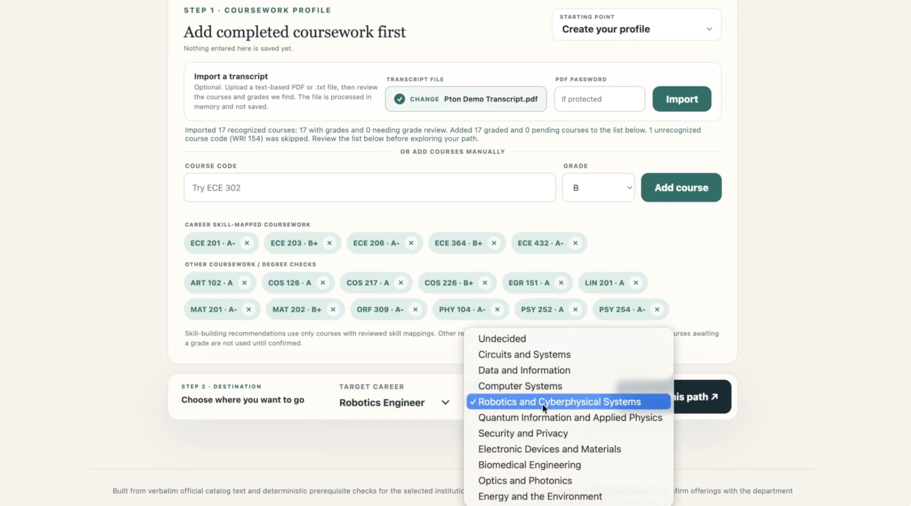
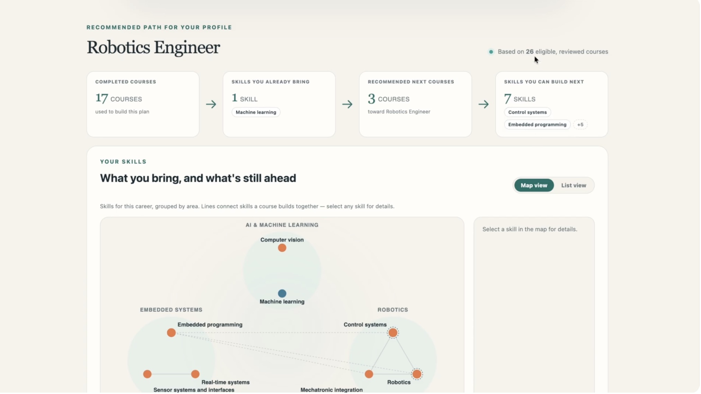

Jido | Stellic Pathfinder Challenge

the problem
This project was built for Stellic's Pathfinders Challenge, Category 1: Degree Planning & Discovery.
Degree-planning tools are good at telling a student whether a course satisfies a requirement, but not at explaining what that course actually builds — the skill it teaches, or whether that skill matters for a specific career. Students end up picking courses to check boxes, with no real sense of the skillset they're accumulating. Generic career content and AI chatbots don't close that gap either — they talk about skills in the abstract, disconnected from a student's actual transcript or school's catalog, and AI in particular tends to hallucinate courses that don't exist. Human advisors could bridge it, but advising loads are large, and many students — especially undeclared, first-generation, or transfer students — never get that conversation before a semester is already spent on the wrong course.
what i did
My brother Brian and I built Jido around skills, not degree-progress checkmarks, as the real unit of academic progress — grounded in a specific school's actual course and degree data. A student enters their completed coursework and a target career, and Jido recommends the courses that close the biggest skill gaps. Every course in the reviewed set is tagged with the specific skills it builds, verified against verbatim catalog text rather than inferred by a model, and every target career specifies which skills it calls for, at what depth, and how essential each one is. Jido maps a student's completed courses to the skills they've already built, weighs that against the target career's requirements, filters out courses they've completed or can't yet take, and ranks what's left — courses that also satisfy an open degree requirement get a priority boost, so skill-building and degree progress become one ranked list instead of two.
The recommendation itself is entirely deterministic, never AI-generated, which is what makes it trustworthy. It runs on a Python backend over a Supabase-hosted, reviewed catalog of courses, skills, and career requirements, with an optional RAG layer on top: OpenAI embeddings retrieve the exact reviewed passages relevant to a student's courses and career, and a chat model explains the reasoning in plain language, with every claim traceable back to its source.
how it works


the result
Jido helps students make fewer disconnected elective choices, understand why a course actually matters, and build career-relevant skills while still progressing toward graduation — especially useful for students with limited access to individualized advising. For advisors, it gives a starting point for a better conversation. It isn't meant to replace degree-audit tools or human advisors, but to add the "why" layer those systems usually lack. Given the hackathon's time and resource constraints, we modeled Jido on Princeton and Carnegie Mellon's Electrical and Computer Engineering programs as a proof of concept — the goal is for it to scale to other schools, majors, and concentrations, potentially as an integration into existing course-planning tools.